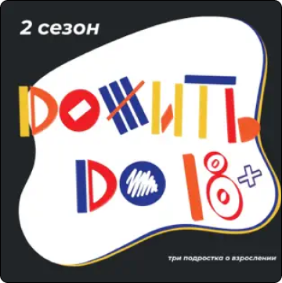
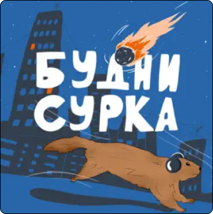

Подкасты
-

Дожить до 18
Три разных, но похожих друг на друга одиннадцатиклассника рассуждают о вечных проблемах молодых. Самодельный мамблкор-подкаст от подростков про выбор жизненного пути, поступление в институт, отношения и многое другое.
-

Будни сурка
Аудиодневник подростка из Латвии. Автор рассказывает не о скучной и будничной жизни, а делится своими историями, рефлексирует на тему того, что волнует его на данный момент. Здесь вы услышите и истории об анорексии, продуктивности, планировании времени и космосе.
-
Подросток готовит
Три разных, но похожих друг на друга одиннадцатиклассника рассуждают о вечных проблемах молодых. Самодельный мамблкор-подкаст от подростков про выбор жизненного пути, поступление в институт, отношения и многое другое.